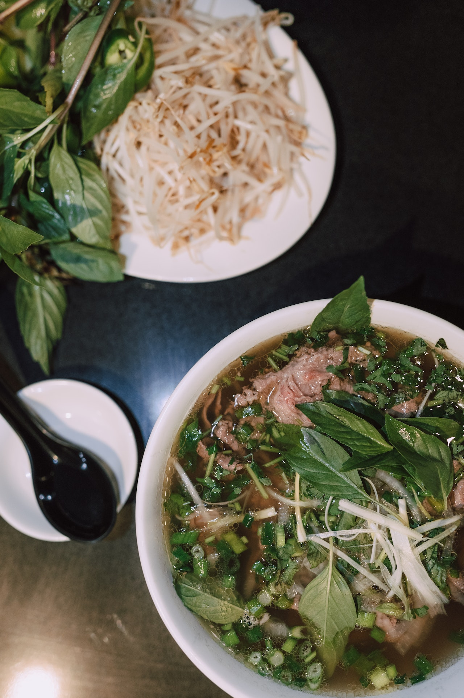

Pho Yo So

Description
Have you ever had a cold and no amount of tea, honey, or OTC medications made you feel better?
Ever heard of Pho?
Ever wanted make this magical and delicious elixir yourself?
Ingredients
- Beef bones
- Onions
- Garlic
- Star anise
- Cinnamon
- Cardamom
- Coriander
- Fennel
- Black peppercorns
- Rock sugar
- Fish sauce
- Pho noodles
- Bean sprouts
- Thai basil
- Cilantro
- Lime
- Jalapeno
Steps
- Roast the bones
- Char the onions and garlic
- Parboil the bones
- Char the ginger
- Toast the spices
- Simmer the broth
- Strain the broth
- Season the broth
- Prepare the noodles
- Prepare the toppings
- Assemble the bowls